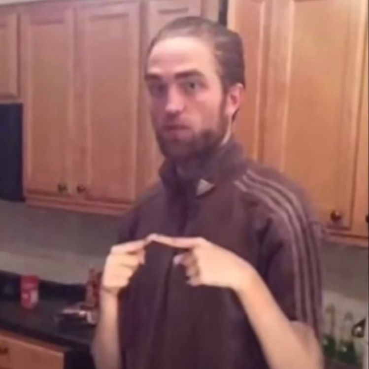
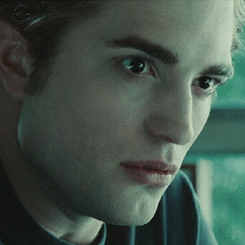
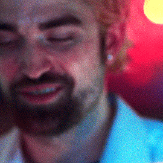
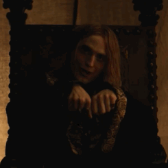
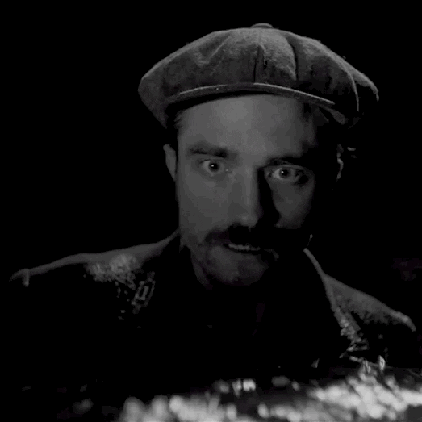
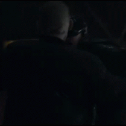

Такой разный роберт
- 
Это Роберт Паттинсон - актер
Ро́берт Ду́глас То́мас Па́ттинсон (англ. Robert Douglas Thomas Pattinson; род. 13 мая 1986) — британский актёр, фотомодель и музыкант. Мировую известность ему принесли роли Седрика Диггори в фильме «Гарри Поттер и Кубок огня» и Эдварда Каллена в серии фильмов «Сумерки».
- 
Это Роберт кровосос
Э́двард Ка́ллен (англ. Edward Cullen), полное имя Эдвард Э́нтони Мэ́йсон Каллен (англ. Edward Anthony Masen Cullen) — один из главных героев серии романов «Сумерки» американской писательницы Стефани Майер.
Это Роберт грабитель
Отчаявшись найти работу и достать деньги на оплату счетов, Конни планирует ограбление банка.
- 
- 
Это Роберт Людовик
Людовик Гиеньский (фр. Louis de Guyenne, Dauphin de France; 22 января 1397 — 18 декабря 1415) — третий сын и наследный принц (дофин) французского короля Карла VI Безумного и Изабеллы Баварской, дочери герцога Баварии Стефана III Великолепного и Таддеи Висконти.
Это Роберт живодер
Молодой Ифраим Уинслоу приезжает на отдалённый остров работать новым ассистентом смотрителя маяка.
- 

Это Роберт мышь
Бэ́тмен (англ. Batman), изначально Бэт-мен (англ. Bat-man «Человек — летучая мышь») — супергерой.
- 